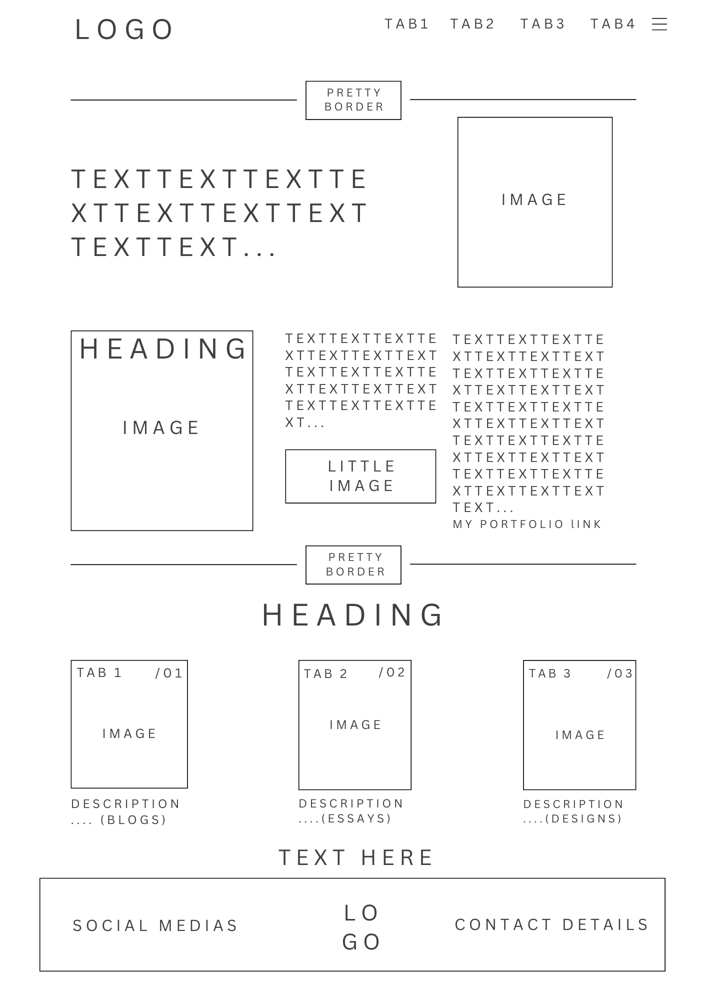
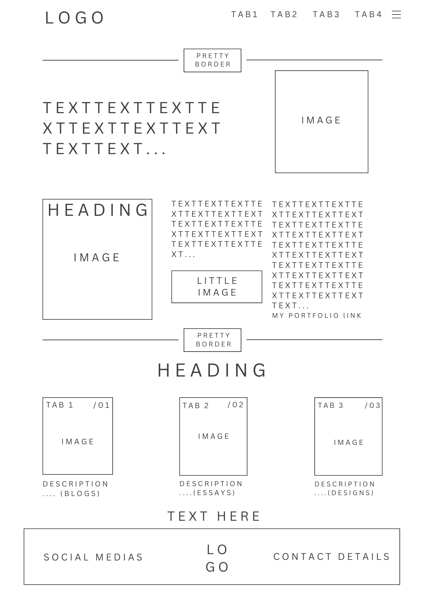

Week 2 Blog Post
Hypertext & Inspiration: Moulthrop's 'You Say You Want a Revolution?'
How does it speak to the internet today?
The Moulthrop reading was long but a rather important analysis to how the original functions of Hypertext has been manipulated by the state of the digital landscape, being commercialised. The reason why the idea of the internet came about was for the sake of creating this enormous library of knowledge that was interactive- where people from around the world could contribute to this knowledge. But instead, it's being used mainly for commercial purposes. And although people are able to express themselves and their thoughts online, society's experience online is controlled by cooperations which in turn undermines its original function. He makes reference to Vannevar Bush's "Memex" and Theodor Nelson's Xanadu to explain they both envisioned the "interactive docuverse" which consolidates his critique of the modern day internet. Moulthrop expresses that The open and dynamic docuverse that hypertext was supposed to bring can't be sensed in the pullulation of possibilities today..." (Moulthrop, 2003, pg. 691) This, I feel, has become so much more relevant today since the Internet has become a commercial hub.
He notes that cooperations like Yahoo and CNN control our digital experiences. In the modern day internet, there are even more cooperations that control our experience online. For example, Youtube (Google) makes use of algorithms to determine the content that gets the most engagement and consumer reach which downplays independent creators and media. IOS App Store (Apple) removes apps that challenge political narratives like the app "HK Map Live", which was designed to help protestors to locate police and demonstrations. (Paunescu, 2019). X (Twitter) along with Facebook supressed the political discussions around the Hunter Biden laptop story where he left his laptop at a repair shop in Delaware and information suggesting he was engaging in "questionable business dealings abroad" was found. (Desk, 2024)
It was so interesting to see how Moulthrop's utilises "McLuhan's 4 Media Questions" to talk about the effect of hypertext and just how relevant it becomes in communication today:
What does hypertext enhance or intensify?: I's explained that hypertext allows for people to link ideas dynamically instead of following a linear structure by fostering an "ethos of connection" (Moulthrop, 2003, pg. 697). In today's society, things like AI generated content is under algorithmic control, where information is filtered and guides users to specific content which in turn controls the way users access and understand knowledge.
What does hypertext render obsolete or displace?: Hypertext competes with "post-literacy" (television communication) which engages users more by being more interactive. (Moulthrop, 2003, pg. 698). He notes that traditional broadcasting only has the users interacting passively. However in society's digital experience today, interactivity is an illusion. For example, journalism today makes use of clickbait and sensationalism to attract its readers, rather than providing in-depth reports of current affairs.
What does hypertext retrieve that was previously obsolete?: Its explained that we have the "power to revive print literacy" (Moulthrop, 2003, pg. 699) in a new digital form to transform the linearity of text into more interactive and dynamic forms. But, today, these "dynamic forms" are manipulated to spread propaganda within communities online. For example, Reddit was a platform for people share and comment on stories and knowledge but has now become heavily censored and monetized, which is probably to ensure that people are only exposed to certain ideologies.
What does hypertext produce or become when taken to its limit?: Moulthrop references McLuhan's "reversal" theory, that "every form, pushed to the limit of its potential, reverses its characteristics" (Moulthrop, 2003, pg. 701) to predict what could possibly happen if hypertext reaches its peak. Hypertext was supposed to be a democratic space for people to share and contribute to knowledge but today, where hypertext becomes most popularised, it's now a controlled space with a hierarchy that controls and centralises media and advertisements.
Discuss your folder structure and URL scheme. Outline your decision-making.
Folder Structure:
- Profile: websitename.com/
index.html - Homepage
about.html - Profile
- Blogs: websitename.com/blogs/
index.html - Blogs Homepage
blog(number).html - Specific Blog Posts
- Essays: websitename.com/essays/
index.html - Essays Homepage
essay(number).html - Specific Essays Posts
- Portfolio: websitename.com/portfolio/
index.html - Portfolio Homepage
portfolio(number).html - Specific Portfolio Work
- Design: websitename.com/design/
Index.html - Wireframe designs Homepage
Wireframe ideas
Put in images of your first wireframe ideas and explain what you are thinking of doing.
 


Inspirational websites
Put in links to websites that are inspirational, and start collecting reference material here.
- https://bruno-simon.com/: This website was so refreshing! I never thought of implementing animation into something like a portfolio. It really immerses the user to drive the car around to see the rest of Bruno's portfolio. There are also some fun elements where the user can just drive around and knock down blocks. I enjoyed this aspect and found it refreshing because it uses 3d animation which isn't as common in website portfolios- most are just 2D and static.
- https://webandcrafts.com/: I loved how they incorporated the mouse scrolling when going through the home page. The scroll controls the animations and the information presented to the user so they can determine how fast they see information. I thought it was a unique way to make a website interactive.
- https://www.benjamin-nespoulous.com/: I enjoyed the simplicity in the design of this website with thin lines and tables and a tri-colour colour scheme (shades of purple). I also like how when you move the mouse it highlights the tabs you're looking at. Another aspect I liked what that it was entirely just text, which contributes to its minimalism. But when you hover over the name of a project, the user gets a little preview of what the end product looked like!
- https://www.enricodeiana.design/: I loved the typography and the use of space in this website. The information presented is minimal and allows for the user to comprehend all the features on the website one by one. Even when you click on the product, it features every aspect of the information and designs of the product at your own pace, assisted by the white space amongst the designs.
- https://www.melaniedaveid.com/: It was interesting to see how this website functions without tabs for navigation. I enjoyed how when looking at her different products felt like flipping to cards which I thought was immersive.
- http://seanhalpin.xyz/: I loved the minimalism in this website however my most favourite feature is the user's ability to change from day mode to night mode at the bottom of the page. Although I wouldn't exactly place this at the end of the page and rather at the beginning, it assists in making the user's experience more comfortable, since this website makes use of vibrant colours.
- https://mxb.dev/: This website uses a social media structure in his structure of his website. When you click on the "Writing" or "Notes" tab, it looks like tweets you'd find on Twitter. I think it was really intuitive to use this sort of structure in a website because it becomes so much more personal, as if you're looking at his profile on social media. It was also cool how you could change the colours of his website. The names of the colour palettes are named after popular worlds and environments from Nintendo games.
- https://www.stevenmengin.com/: I loved the dark minimalism in this website. I think black fills white space beautifully.
Reflect on interaction and the www: what does interaction mean to you?
Interactivity, to me, is not just about communication and user response. It is about making meaning, almost an act of exchanging energy and emotion. On a deeper level, the most important interaction that can leave a user feeling immersed is our inner, cognitive interaction. It's how we engage with concepts and ideas to reflect and process experiences. I also feel that storytelling is an important factor that shapes how we understand and experience narratives.
References:
Desk, T.W. (2024). From laptop to pardon: The Hunter Biden story explained. [online] The Times of India. Available at: https://timesofindia.indiatimes.com/world/us/from-laptop-to-pardon-the-hunter-biden-story-explained/articleshow/115901205.cms [Accessed 24 Feb. 2025].
Moulthrop, S. (2003) 'You Say You Want a Revolution? Hypertext and the Laws of Media (1991)', in N. Wardrip-Fruin and N. Montfort (eds) The New Media Reader. HAR/CDR edition. Cambridge, Mass: The MIT Press.
Paunescu, D. (2019). What Apple's removal of a Hong Kong protest app means for democracy. [online] Vox. Available at: https://www.vox.com/recode/2019/10/23/20927577/apple-hong-kong-protest-app-democracy.